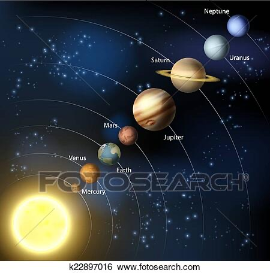
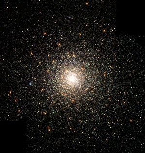
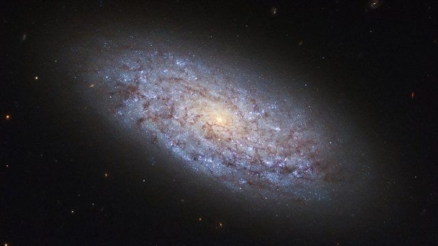
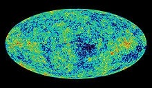

Post Time: 2021/9/11
Posted by: Wong Chun Fung
天文冷知識 - 宇宙
由今日開始，天文學會會不停期喺 IG 同 Teams Channel post 一啲唔同嘅天文冷知識！🚀🤤
而第一次嘅天文冷知識係，何謂宇宙？🤔
相信大家同宇宙都會有唔同嘅幻想，究竟天上面嘅星星係乜嘢嚟嘅呢？究竟其實宇宙係點嘅呢？今日會喺度解答大家心中嘅問題。
其實宇宙係咩？
字面上嚟睇：宇指空間，宙指時間。
它包含了行星 e.g. 地球、恆星 e.g. 太陽、星系 e.g. 銀河系、星系際空間 e.g. M42 獵戶座大星雲、次原子粒子（即係比原子更細嘅粒子，例如電子、光子等）以及所有的物質與能量。
（至於上面講緊嗰啲係乜嘢嚟嘅呢之後會有唔同嘅post慢慢介紹🤤）（①②③為次方）
簡單啲咁講，由地球出發，我哋首先會見到嘅就係我哋身處嘅太陽系，而家我哋踏出最遙遠嘅行星海王星之後，我哋就係正式離開太陽系，但係當我哋離開咗太陽系之後，唔代表我哋到達太陽系嘅鄰居㗎，而我哋離開咗太陽系之後其實只會發現太陽只係一個光點。
視野闊度：10①⑤m

再出到去呢我哋就會見到太陽系嘅鄰居，即係半人馬座毗鄰星，佢就距離我哋有4.22光年，即係用光嘅速度行都要行4.22年。
視野闊度：10①⑦m
我哋發現其實除咗太陽系之外，都仲有其他嘅恆星聚集埋一齊嘅，而呢樣嘢我哋就會稱為星團，而最近太陽系嘅星團就係畢宿星團，距離我哋150光年。
視野闊度：10①⑨m

當我哋再踏出一步之後，就會到達銀河系，我哋發現其實太陽係只係整個銀河系之中數千億粒恆星之中嘅其中一粒（遲啲將會有一個 post 係介紹銀河系，所以今日就唔講咁多）
視野闊度10②①m

再踏出一步之後我哋就會發現銀河系其實只係祖先個星系之中嘅其中一個，而我哋身處嘅星團叫做本星星團。
視野闊度10②③m
再出多少少就係成個宇宙旅程嘅終點，而我哋見到嘅就係有唔同星系聚集而成嘅絲狀結構
視野闊度10②⑤m
到最後我哋到達嘅係可觀察宇宙，咦其實我觀察宇宙只係一堆微波輻射。
視野闊度10②⑦m
